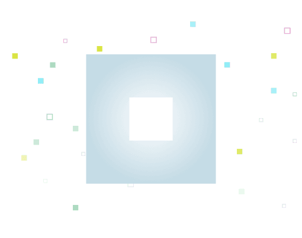

What Is Not Pixel ($PX): How to Play New Notcoin Game In Telegram

In the expanding world of Telegram-based cryptocurrency games, a new project known as Not Pixel has emerged as the third installment in the Notcoin ecosystem. This game blends innovative digital art, collective collaboration, and blockchain technology, providing a distinctive experience for users. This guide will delve into Not Pixel, explaining how to play and the rewards it offers.
What is Not Pixel?
Not Pixel is the newest creation from the Notcoin team, following the release of their previous game, Lost Dogs. It officially launched on September 24, 2023, following the conclusion of its beta testing on September 23, 2023. Not Pixel is a dynamic and creative game hosted on Telegram that revolves around a large canvas containing 1 million pixels (a 1000x1000 grid), where players from all over the world can participate in creating a collaborative digital masterpiece. Each pixel placed contributes to the final artwork, promoting teamwork among participants.
How Does Not Pixel Work?
Players in Not Pixel choose a color and place pixels on the canvas to contribute to the final image. No single player can significantly alter the canvas, making collaboration essential for creating the complete picture. What makes the game particularly engaging is that every pixel placed becomes a permanent part of the artwork. This permanence adds a layer of strategy to each decision made by players.
Participants begin with a limited amount of energy, which replenishes gradually over time. As they progress, they can earn additional energy, allowing them to participate more actively in shaping the canvas.
How to Join Not Pixel
To join Not Pixel, simply access the game through its Telegram mini-application. Once inside, players can view the large digital canvas, zoom in on any part of it, select a color, and start placing pixels. You can continue placing pixels until your available energy is depleted.
Butterfly Effect and Collaboration
Not Pixel incorporates the concept of the “Butterfly Effect,” where even a single pixel placed by a player can have a lasting impact on the entire canvas when combined with others. Every small action matters. Collaboration is critical, and during the beta phase, players from various countries tried to create their national flags on the canvas.
However, with the official launch, Not Pixel’s developers have strictly prohibited the use of bots or scripts, and drawing flags is no longer allowed.
Proof-of-Canvas System: What is PX?
Not Pixel isn’t just a game — it offers players an opportunity to earn rewards. Each pixel placed grants the player a unit of PX, the in-game currency. This Proof-of-Canvas (PoC) system is similar to Bitcoin’s Proof-of-Work mechanism.
Players can accumulate PX by placing pixels, which can be used to boost their game performance. For example, players can upgrade features such as pixel placement speed, energy recharge rate, and increase their daily limits. PX is passively extracted at a rate of 0.1 PX per day per pixel. For instance, if a player has placed 15 pixels, they will earn 1.5 PX per day automatically. However, players must withdraw these earned PX tokens every 8 hours; otherwise, the automatic extraction stops.
Weekly Events and Squad Formation
To enrich the gaming experience, Not Pixel offers weekly events and the ability to form squads and invite friends. Being part of a squad enhances your influence on the canvas, with the additional benefit of 100% faster game progression for each squad member. Therefore, joining large squads like the Crypto Squad can provide a competitive advantage.